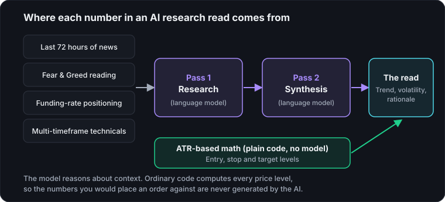

Ask an AI model to "analyze the market" with nothing but its training data and you'll get something that sounds confident and is frequently stale or invented. CryptoBolt's AI research desk is built to avoid that in two ways: a two-pass pipeline, and a hard rule that trade levels are never AI-generated.

Pass one: research
The first pass is a free-text research step. The model is handed live inputs — recent news, the Fear & Greed reading, funding-rate positioning, and multi-timeframe technical data — and asked to reason through what's actually happening, in plain language, before committing to any conclusion.
Pass two: synthesis
The second pass takes that research and structures it into the read you actually see: trend read, volatility context, and a rationale you can follow, returned as structured data so the interface can render it consistently rather than parsing free-form prose.
Why trade levels aren't AI output
Entry, stop, and target levels in CryptoBolt come from deterministic ATR-based volatility math, not from the model. Language models are good at reasoning through context and bad at reliably generating precise numbers — so the numbers you'd actually place an order against are computed the same way every time, and the AI's job stays limited to the read, not the price levels.
What you can check yourself
- Same inputs, same levels. Because the price levels come from ordinary math, they are deterministic: there is nothing for the model to invent.
- Inputs you can see. News, sentiment, funding, and trend are the same kinds of data shown elsewhere in the terminal, so you can compare the read against them.
- "No clean setup" is allowed. A read that says nothing is worth trading is a legitimate result, which a price forecast would never give you.
What the AI does and what code does
| Task | Done by | Why |
|---|---|---|
| Reading news, sentiment and funding context | AI model | Good at reasoning through mixed information in plain language |
| Describing trend and volatility | AI model, from live data | Turns multi-timeframe data into a readable summary |
| Calculating entry, stop and target | Plain code using ATR | Numbers must be exact and repeatable |
| Position size and risk figures | Plain code | Simple arithmetic, so there is nothing to guess |
| Deciding whether to trade | You | The read is research, not an instruction |
What it cannot do
- It cannot predict price. The read describes conditions now. It does not claim to know where price goes next.
- It cannot see everything. It works from the inputs it is given. A sudden event that is not yet in the news feed will not be in the read.
- It can be wrong. Even with live data, interpretation can be off. That is why the inputs are shown, so you can compare them with what you see yourself.
- It is not a replacement for a plan. Position size, stop placement and risk limits are still your decisions.
A worked example: checking one claim
Suppose the AI desk says: "Funding on this coin is elevated, which suggests traders are leaning long." Here is how to check that in two minutes.
First, find the funding rate on the terminal and note the number. Second, compare it with what is normal for that coin: a rate of 0.01% per eight hours is the common baseline on many exchanges, so a reading of 0.05% is several times higher. Third, look at open interest. If open interest has also been rising, more positions are being opened, and the long side is paying to hold them. Fourth, check price. If price has not moved much while funding climbed, positions may be building without much price progress.
At the end you have not learned where price will go. You have learned that the claim matches the data, and what the data does and does not say. That is the standard worth holding any AI summary to: every sentence should be something you could verify yourself in a few clicks.
Frequently asked questions
Does CryptoBolt AI make up price levels?
No. Entry, stop and target levels come from ATR-based code, not from the language model, so the same inputs always give the same numbers.
What data does the AI research use?
Recent news, the Fear & Greed reading, funding-rate positioning and multi-timeframe technicals, plus optional web research when that toggle is on. The research panel lists what an answer was based on.
What happens if the AI service is unavailable?
The terminal's market data, charts and calculators keep working because they do not depend on the AI. The AI desk shows a clear message and lets you retry.
Is the AI output financial advice?
No. It is educational research support. Always do your own checking and only risk money you can afford to lose.
For the reasoning behind this design, see why CryptoBolt doesn't predict crypto prices. For the wider picture of where AI fits into crypto, see when AI meets crypto.
Myth
AI research tells you what the price will do next.
Reality
It explains measured conditions. The trade levels come from arithmetic on live data, and the read is allowed to say there is no clean setup.
Quick check
In CryptoBolt's AI research, what produces the entry, stop and target numbers?